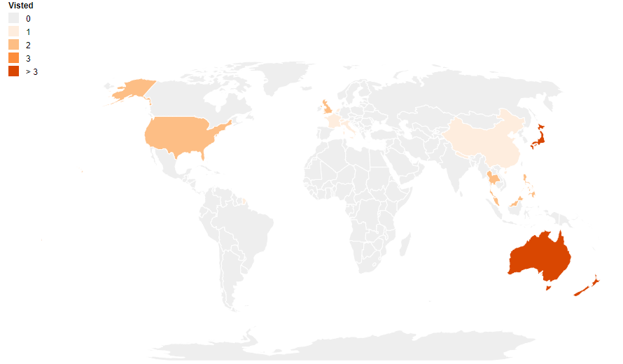

Personal
Born in a small pacific Island (Samoa) where I picked up an American/Canadian accent and some amazing experiences. Now located in in beautiful sunny Queensland (Australia), I try to make the most of out door opportunities like hiking or going to the beach.
I found my passion in mathematics and computing (the latter in application for the former). As my attraction to understanding more mathematics grew so did my realisation of known unknowns, which set me off on a life long pursuit. I did my bachelors and masters in mathematics and am now pursuing a PhD in computational statistics / applied probability at Queensland University of Technology.
When possible I enjoy travelling and experiencing different cultures. Below are places visited, hopefully as a motivator for future experiences.
